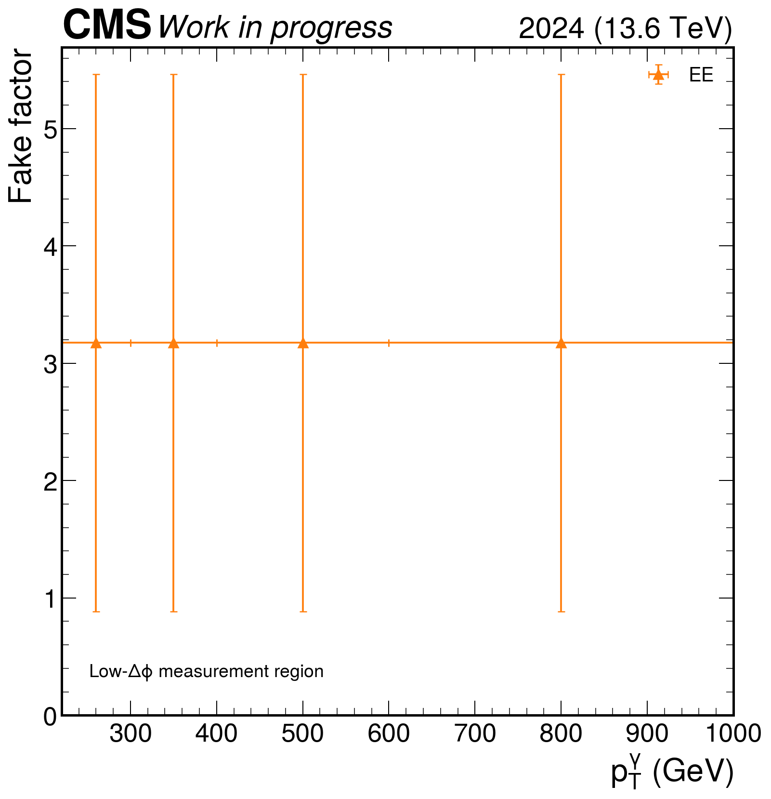
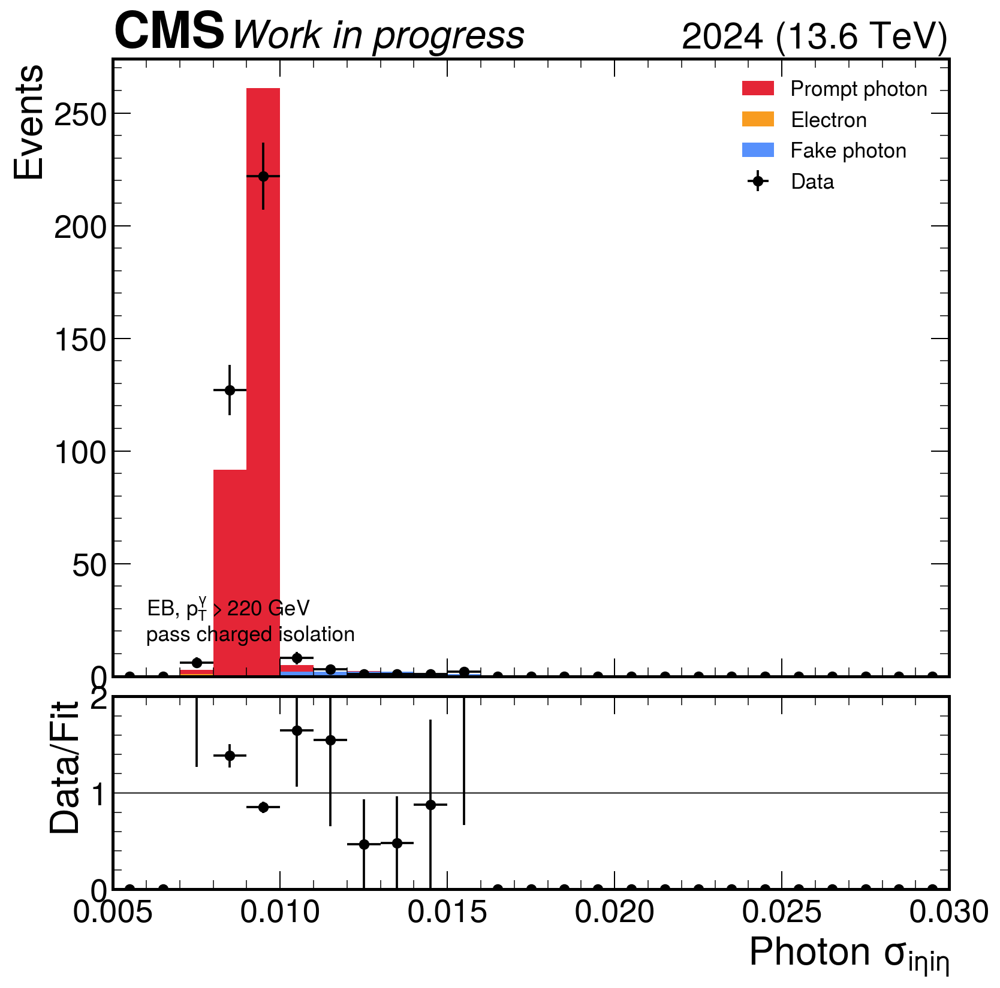
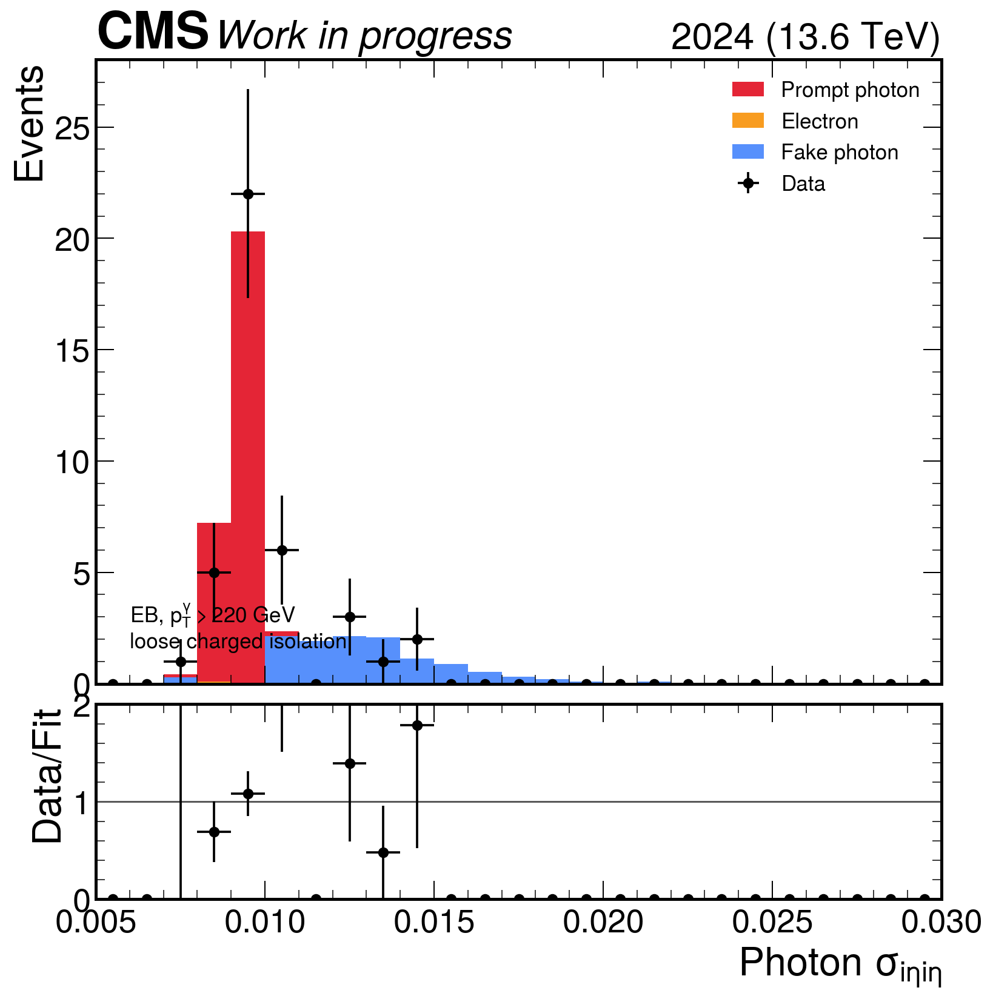
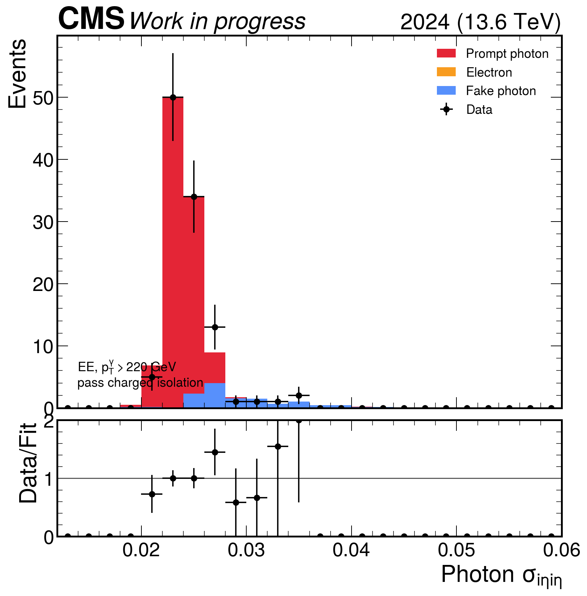
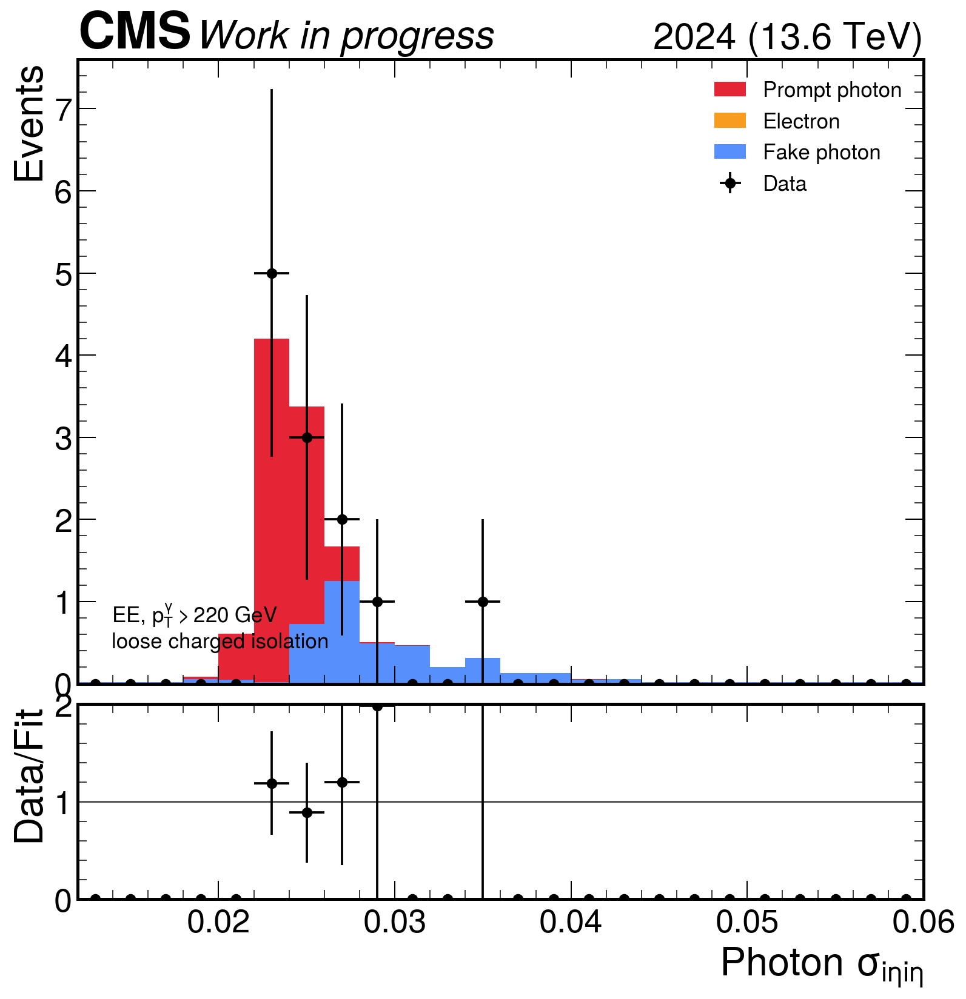
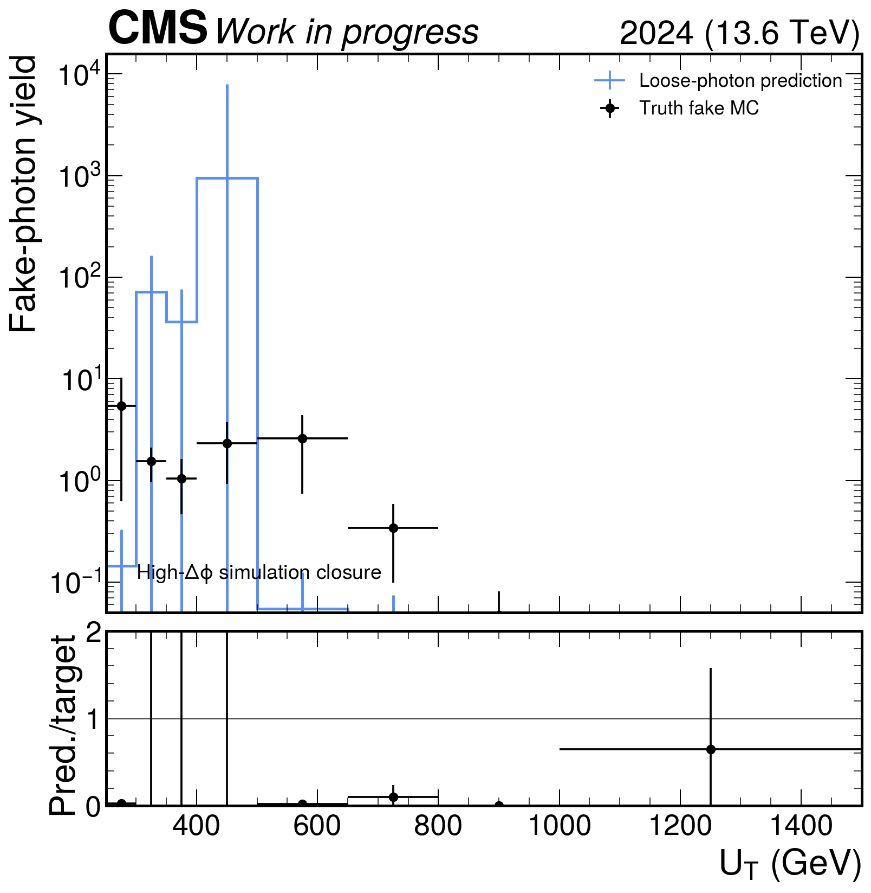
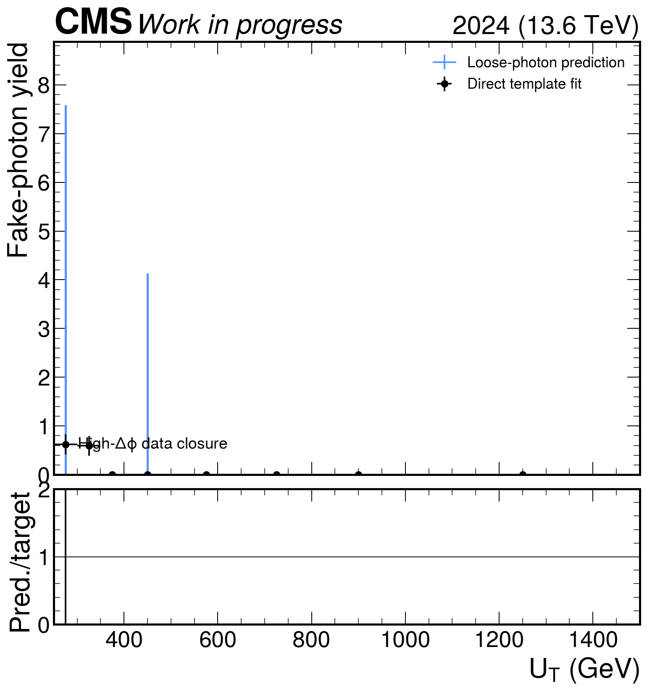
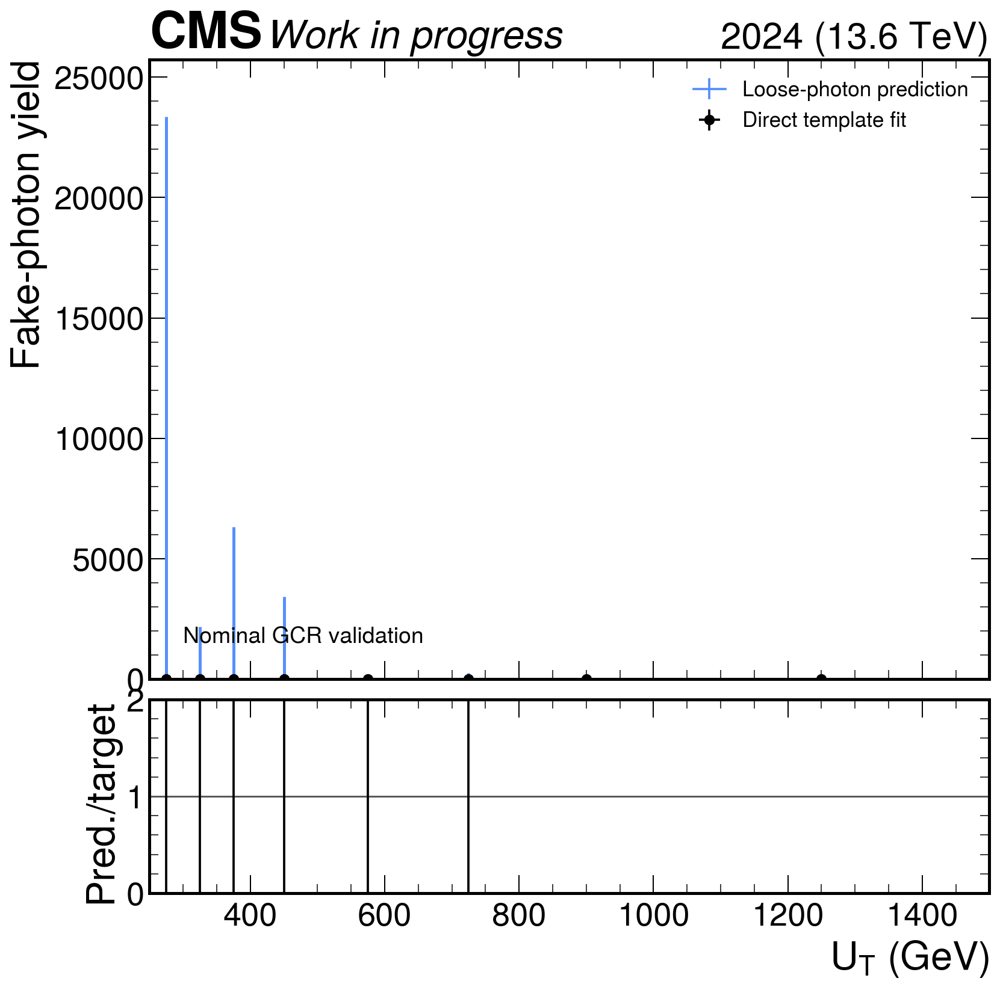
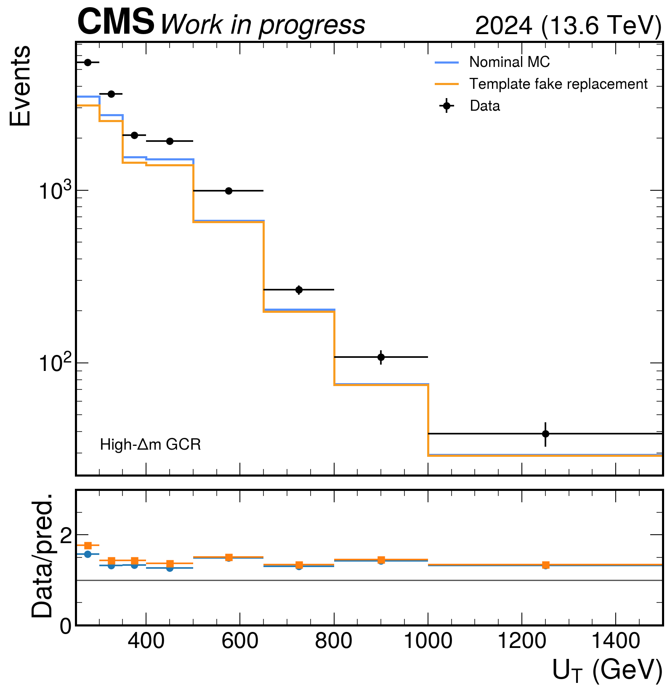

MC template-fit bias

Work in progress. Nominal histograms were not modified. Adoption is gated by MC and independent-data closure.
| measurement region | GCR_DPhiVR_Low |
|---|---|
| validation region | GCR_DPhiVR_High |
| selected compact events | 387558 |
| simulation closure prediction/truth | 79.42890258219548 |
| simulation closure chi2/ndf | 1.01660729226109 |
| data VR prediction/direct | -20.985975985278206 |
| data VR chi2/ndf | 1.0487879881120292 |
| GCR prediction/direct | -63.05767740695352 |
| GCR chi2/ndf | 0.00017161320381154133 |
| production audit 1 | incomplete: 1383/5795 valid jobs |
| production audit 2 | incomplete: 0/60 valid jobs |
| rare normalization audit | complete: 937/937 files |
| nominal_data_over_mc | 1.415572442604562 |
| replacement_data_over_prediction | 1.537956276380287 |
| nominal_absolute_integral_distance | 0.41557244260456194 |
| replacement_absolute_integral_distance | 0.537956276380287 |
| nominal_metrics | {'integral_data_over_prediction': 1.415572442604562, 'abs_log_integral_ratio': 0.3475340023630971, 'log_ratio_rms': 0.3285734433544793, 'max_abs_log_ratio': 0.4558645916354564, 'poisson_deviance': 1677.2748024369725} |
| replacement_metrics | {'integral_data_over_prediction': 1.537956276380287, 'abs_log_integral_ratio': 0.430454441797866, 'log_ratio_rms': 0.3819006807075094, 'max_abs_log_ratio': 0.5698507036632665, 'poisson_deviance': 2501.850394733232} |
| replacement_shape_metrics_improve | False |
| decision | incomplete production: adoption decision deferred |
| Fine bin | Used measurement | Fake factor |
|---|---|---|
| EB_pt220to300 | EB_inclusive | invalid |
| EB_pt300to400 | EB_inclusive | invalid |
| EB_pt400to600 | EB_inclusive | invalid |
| EB_pt600toinf | EB_inclusive | invalid |
| EE_pt220to300 | EE_inclusive | 3.174 ± 2.29 |
| EE_pt300to400 | EE_inclusive | 3.174 ± 2.29 |
| EE_pt400to600 | EE_inclusive | 3.174 ± 2.29 |
| EE_pt600toinf | EE_inclusive | 3.174 ± 2.29 |








